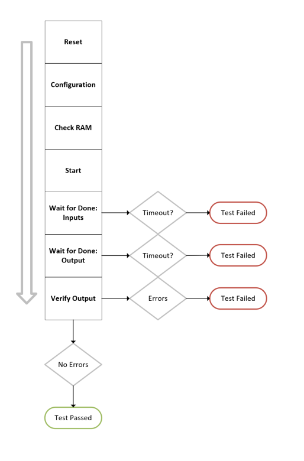

AI Engine DevelopmentSee Vitis™ Development Environment on xilinx.com See Vitis™ AI Development Environment on xilinx.com |
Building the Design¶
Next, we will create two bare-metal PS host applications:
make application MAIN=main_partial
make application MAIN=main_full
The individual commands are explained later on in this module.
Introduction: Building a Bare-Metal System¶
The Vitis™ unified software platform provides a variety of Xilinx software packages, including drivers, libraries, board support packages, and complete operating systems to help you develop a software platform. In this module, you will create a standalone platform (a single-threaded, simple operating system (OS) platform) that provides the lowest layer of software modules used to access processor-specific functions. You will then compile a bare-metal application that orchestrates the data flow between the PL kernels and AI Engine graph. In Module 07 and 08, you will create a PetaLinux software platform to run Linux applications which conduct functional and performance tests. Bare-metal systems are often first created because they are simpler, easy to validate, and can help get the entire system design up and running quickly. When the bare-metal system is stable, this indicates the hardware is stable. System designers can then move on to build complex Linux-based embedded software to run on the hardware.
Building the Design¶
The process of building bare-metal applications can be broken down into three parts: generating the platform, compiling the PS application source code, and linking the PS application source code. These steps are repeated to create two bare-metal PS host applications (main_partial.elf and main_full.elf).
Difference between main_partial.cpp and main_full.cpp¶
You will notice that there are two main files: main_partial.cpp and main_full.cpp. The only difference between them is that the main_partial.cpp file runs through 10 complex data samples (TDATA) for each kernel. The main_partial.cpp file is created to run through hardware emulation in a timely manner. In Module 06, you will run the main_partial.elf file for hardware emulation.
The main_full.cpp file runs through the full set of data. For the dlbf_data kernels, main_full.cpp runs through NITER=4 and BLOCK_SIZE=384 for a total of 1536 64-bit data packets (TDATA). For the dlbf_coeffs kernels, main_full.cpp runs through NITER=4 and BLOCK_SIZE=256 for a total of 1024 64-bit data packets (TDATA). In Module`06, you will run the main_full.elf file on the hardware run on the VCK190 board.
Generating the Platform¶
Building bare-metal applications requires a bare-metal domain in the platform. In Module 01, you created a custom platform with a bare-metal domain. In Module 04, you built on top of your custom platform and added PL kernels (and subsequently their PS drivers) to the design. The first step of building the bare-metal PS host application is to use the XSA generated during the link process to create a new software platform using the following command.
generate-platform.sh -name vck190_baremetal \
-hw ../../Module_04_AI_Engine_and_PL_Integration/build/rev1/hw/beamforming.rev1.hw.xsa \
-domain ai_engine:aie_runtime \
-domain psv_cortexa72_0:standalone \
-out-dir build
The options are explained in the AI Engine Documentation: Building a Bare-Metal System.
Compiling the PS Application Source Code¶
You now need to compile your PS host application (main_partial.cpp or main_full.cpp) and the additional source code your PS host applications need. The source code is stored in the baremetal_src/ folder. This bare-metal PS host application only controls the PL kernels, so you do not need to compile the aie_control.cpp file in this design.
Compile the main_partial.cpp file using the following command:
aarch64-none-elf-g++ -c -Wall -O0 -g -mcpu=cortex-a72 -MMD -MP \
-I=build/vck190_baremetal/psv_cortexa72_0/standalone_domain/bsp/psv_cortexa72_0/include \
-o build/main_partial.o main_partial.cpp
In this step, you need to include the BSP include files from the generated platform. This command creates a build/main_partial.o object. The same options are used when compiling the main_full.cpp file.
Next, compile the helper source code stored in the baremetal_src/*.cpp files. Below is an example of how to compile the dlbf_din.cpp file. The rest of the baremetal_src/*.cpp files are compiled the same way.
aarch64-none-elf-g++ -c -Wall -O0 -g -mcpu=cortex-a72 -MMD -MP \
-I=build/vck190_baremetal/psv_cortexa72_0/standalone_domain/bsp/psv_cortexa72_0/include \
-o build/dlbf_din.o baremetal_src/dlbf_din.cpp
This step creates a build/*.o object for each file in the baremetal_src/*.cpp.
Linking the PS Application Source Code¶
Lastly, link the PS application object (main_partial.o) with the baremetal_src object files:
aarch64-none-elf-g++ build/main_partial.o \
build/dlbf_cin.o \
build/dlbf_din.o \
build/dlbf_gold0.o \
build/ulbf_cin.o \
build/ulbf_din.o \
build/ulbf_gold0.o \
build/utils.o \
build/utils_dlbf.o \
build/utils_ulbf.o \
-Wl, -T -Wl,./lscript.ld -mcpu=cortex-a72 -Wl, \
--start-group,-lxil,-lgcc,-lc,-lstdc++,--end-group \
-L build/vck190_baremetal/psv_cortexa72_0/standalone_domain/bsp/psv_cortexa72_0/lib \
-o build/main_partial_ps.elf
During this step, the board support package (BSP) libxil.a is required. It is linked by including the BSP library from the generated platform. This command creates the bare-metal executable (main_partial.elf). The main_full.elf file is created in the same way.
Bare-Metal Source Code¶
This section dives into the baremetal_src code and describes the purpose of each file. Open the baremetal_src/*.cpp files to get a sense of what the source code does. A summary of the files is given below.
dlbf_din.cppulbf_din.cppdlbf_cin.cppulbf_cin.cpp
These files contain the data input for the dlbf_data, ulbf_data, dlbf_coeffs, and ulbf_coeffs PL kernels. These PL kernels were already initialized with the input data from the *_hex.mem data files. The PS host application checks that the PL kernels were initialized correctly by comparing the BRAM content in the PL kernels with the data in these files.
The dlbf_gold0.cpp and ulbf_gold0.cpp files contain the golden data output expected from the AI Engine. The AI Engine generates the output data and stores it in the 1dlbf_slave and ulbf_slave PL kernels. The PS host applications check the URAM content in these PL kernels and compare it to the expected golden output in these files.
The dlbf_utils.cpp, ulbf_utils.cpp, dlbf_utils.h, and ulbf_utils.h files contain utility functions that help the main PS host application check the input data, verify the output data, reset the PL IPs, and more.
Open the dlbf_utils.cpp file. There are three global variable arrays: dlbfDataAddr, dlbfCoeffsAddr, and dlbfSlaveAddr. These are arrays that contain variables that start with XPAR_*. The definitions of these variables are located in the build/vck190_baremetal/psv_corexa72_0/standalone_domain/bsp/psv_cortexa72_0/include/xparameters.h file. The xparameters are the base addresses the PS host application uses to access the control and status registers of the PL kernels.
The utils.h and utils.cpp files contain functions that are common to the dlbf and ulbf operations. For now, it contains one function, extractIQ, which returns the imaginary and real parts of a given integer.
The params.h file contains all the global variables that are used in the PS host application. Note that each PL kernel has its own set of global defines in this file.
In Module 03, you learned that the PL kernels contain a control status register (CSR) module. The PL kernels have been designed so that the CIPS block can access the registers in the CSR block to control the data masters or the RAM slave in the PL kernels. The CIPS block contains the A72 processor on which the PS host application runs. These global defines are the addresses the host application uses to directly access the CSR registers in the PL kernels. Below is a table of the dlbf_data CSR registers.
Control and Status Register Address Map
| Register Space Offset | Bits and Name | R/W? | Global Defines (params.h) | Description |
|---|---|---|---|---|
| 0x0 | [31:0] ID | R | DLBF_DATA_REG_OFFSET_ID | 32-bit ID register. |
| 0x4 | [0] RESET | W | DLBF_DATA_REG_OFFSET_RESET | 1:assert, 0:deassert. Also assigned to the m_axis_rst_bram input in the CRS module. |
| 0x4 | [4] GO | W | DLBF_DATA_REG_OFFSET_START | 1: start PL traffic, 0: stop PL traffic. Also assigned to the go_bram input in the CRS module. |
| 0x8 | [11:0] BLOCK_SIZE | W | DLBF_DATA_REG_OFFSET_BLOCK_SIZE | Sets the block size of the stream frame. TLAST is asserted for every |
| 0xC | [11:0] NITER | W | DLBF_DATA_REG_OFFSET_NITER | Sets the number of iterations of the data to go through. If this set to 0, data will be transmitted to the AI Engine forever. Also assigned to the niter_bram input in the CRS module. The bare-metal host applications set this register to 4. |
| 0x10 | [15:0] ROLLOVER_ADDR | W | DLBF_DATA_REG_OFFSET_ROLLOVER | When the BRAM address reaches the rollover address, it will reset to 0. Also assigned to the rollover_addr_bram input in the CRS module. |
| 0x20 | [0] MASTER_DONE | R | DLBF_DATA_REG_OFFSET_DONE | When this status register is 1'b, the data master is done sending data to the AI Engine. Also assigned to the m0_done_bram input in the CRS module. |
All the PL master kernels (dlbf_data, dlfbf_coeffs, ulbf_data, and ulbf_coeffs) also contain multiple PL data masters (BRAMs). The dlbf_data and dlbf_coeffs have four data masters. The ulbf_data and ulbf_coeffs have eight data masters. Each of these data masters also has its own set of CRS registers. The PS host application can access each PL data master register by adding the dlbf_data xparameter + the data master’s offset + the CRS offset + the CRS register offset.
The following table is a list of the dlbf_data data masters’ offsets and the CRS offset:
Register Address Map
| Register Space Offset | Bits and Name | R/W? | Global Defines (params.h) | Description |
|---|---|---|---|---|
| 0x0000_0000 | -- | R | DLBF_DATA_RAM0_OFFSET | Master 0 data offset. |
| 0x0010_0000 | -- | R | DLBF_DATA_RAM1_OFFSET | Master 1 data offset. |
| 0x0020_0000 | -- | R | DLBF_DATA_RAM2_OFFSET | Master 2 data offset. |
| 0x0030_0000 | -- | R | DLBF_DATA_RAM3_OFFSET | Master 3 data offset. |
| 0x0008_0000 | -- | R | DLBF_DATA_CSR_OFFSET | CSR offset. |
For example, if the PS host application wants to write to the RESET register of data master 0 in the dlbf_data_00 PL kernel, it must write to the following address:
RESET0_ADDR = XPAR_DLBF_DATA_00 + DLBF_DATA_RAM0_OFFSET + DLBF_DATA_CSR_OFFSET + DLBF_DATA_REG_OFFSET_RESET
The rest of the PL master kernels (dlbf_data, dlbf_coeffs, ulbf_data, and ulbf_coeffs) also have similar register address mappings.
The control and status registers of the dlbf_slave PL kernel are shown in the following table.
Register Address Map
| Register Space Offset | Bits and Name | R/W? | Global Defines (params.h) | Description |
|---|---|---|---|---|
| 0x0 | [31:0] ID | R | DLBF_SLAVE_REG_OFFSET_ID | 32-bit ID register. |
| 0x4 | [0] RESET | W | DLBF_SLAVE_REG_OFFSET_RESET | 1:assert, 0:de-assert. Also assigned to the slave_rst_bram input in the CRS module. |
| 0xC | [11:0] NITER | W | DLBF_SLAVE_REG_OFFSET_NITER | Sets the number of iterations of the data to go through. If this set to 0m, data will be transmitted to the AI Engine forever. Also assigned to the niter_bram input in the CRS module. The main_partial.cpp sets this to 4. The main_full.cpp sets this is TODO. |
| 0x20 | [0] SLAVE_DONE | R | DLBF_SLAVE_REG_OFFSET_DONE | When this status register is 1'b, the RAM slave is done receiving data from the AI Engine. Also assigned to the rxdone_bram input in the CRS module. |
Each data slave PL kernel (dlbf_slave and ulbf_slave) contain only one RAM slave (URAM). The PS host application can access each RAM slave module by adding the CRS offset (0x0008_0000) to the CRS register offset. For example, to access the NITER register, write to the following address:
NITER_ADDR = DLBF_SLAVE_CSR_OFFSET + DLBF_SLAVE_REG_OFFSET_NITER
The ulbf_slave PL kernel also has the same register address mapping, and its CSR registers are accessed in the same way.
PS Host Application¶
The next step is to review the PS host application and understand how it orchestrates the data flow between the PL kernels and the AI Engine. The PS host application also verifies the output data stored in the dlbf_slave and ulbf_slave PL kernels by comparing it to golden reference data.
Main Function¶
Open the main_partial.cpp source code and review the main function. It calls two functions: test_dlbf and test_ulbf. If either of them return 0, the test has failed. If both of them return 1, the test has passed. The test_ulbf function is structured in the same way as the test_dlbf function.
test_dlbf/test_ulbf Functions¶
This section details the test_dlbf function (it is left to you to review the test_ulbf function). The diagram below shows the execution flow of the test_dlbf and test_ulbf functions.

Reset¶
The first thing the test_dlbf function does is call the dlbf_reset function (defined in the utils_dlbf.cpp file). This function resets the dlbf_data, dlbf_coeff, and dlbf_slave PL kernels. This is done by asserting and deasserting the DLBF_DATA_REG_OFFSET_RESET register using the Xil_Out32 function. The Xil_Out32 function is part of the Xilinx Hardware Abstraction Layer API in the standalone library. This API is used throughout this PS host application. See the OS and Libraries Document Collection (UG643) for the full API documentation.
Configuration¶
The test_dlbf function calls the dlbf_data_config_ips, dlbf_coeffs_config_ips, and dlbf_slave_config_ips functions. The functions configure the BLOCK_SIZE, NITER, and ROLLOVER_ADDR registers.
| PL Kernel | BLOCK_SIZE | NITER | ROLLOVER_ADDR |
|---|---|---|---|
| dlbf_data | 384 64-bit TDATA | 4 | 1536 |
| dlbf_coeffs | 256 64-bit TDATA | 4 | 1024 |
| dlbf_slave | 768 32-bit TDATA | 4 | -- |
Check RAM¶
The dlbf_data_check_ram and dlbf_coeffs_check_ram functions are called. These functions are optional, but they are useful for debugging. In Module 03, the BRAMs in the dlbf_data and dlbf_coeffs PL kernels were initialized to input data stored in *_hex.mem data files. These check_ram functions ensure that the dlbf_data and dlbf_coeffs RAMs have been initialized to the correct values. The golden input data is stored in the dlbf_din.cpp and dlbf_coeffs.cpp files.
Start¶
The dlbf_start function is called. This function asserts the GO register bit for the dlbf_data and dlbf_coeffs PL kernels to start the PL traffic to the AI Engine.
Wait for Done: Inputs¶
The dlbf_data_wait_for_done is called continuously in a while loop. This function reads the MASTER_DONE register on each dlbf_data PL kernel. When all four data masters in the dlbf_data PL kernels have a status of DONE, the function returns a 1’b, which breaks the while loop. The while loop only calls the function 100 times maximum, and times out if the dlbf_data kernels are not done by then.
After the dlbf_data kernels are done sending their data to the AI Engine, wait for the dlbf_coeffs to send their data to the AI Engine. If the dlbf_data or dlbf_coeffs kernels time out, the test fails.
Wait for Done: Outputs¶
Wait for the dlbf_slave kernels to finish receiving output data from the AI Engine. The dlbf_slaves are done when NITER*BLOCKSIZE number of 32-bit complex data samples (TDATA) are received from the AI Engine. If the dlbf_slaves time out, the test fails.
Verify Output¶
If the dlbf_slave does not time out, the test_dlbf function calls the dlbf_slave_read_and_verify function. This function compares the data in the dlbf_slave to the golden output data in the dlbf_gold0.cpp file. If there are any mismatches, the test fails. If all the output data matches the golden output data, then the test_dlbf passes and returns a 1’b to the main function.
Test ULBF¶
The main function then calls the test_ulbf function. It starts the ULBF kernels and verifies the output of the AI Engine using the same execution flow as the test_dlbf function.
Support¶
GitHub issues will be used for tracking requests and bugs. For questions go to forums.xilinx.com.
License¶
Licensed under the Apache License, Version 2.0 (the “License”); you may not use this file except in compliance with the License.
You may obtain a copy of the License at http://www.apache.org/licenses/LICENSE-2.0
Unless required by applicable law or agreed to in writing, software distributed under the License is distributed on an “AS IS” BASIS, WITHOUT WARRANTIES OR CONDITIONS OF ANY KIND, either express or implied. See the License for the specific language governing permissions and limitations under the License.
XD016 | © Copyright 2021 Xilinx, Inc.